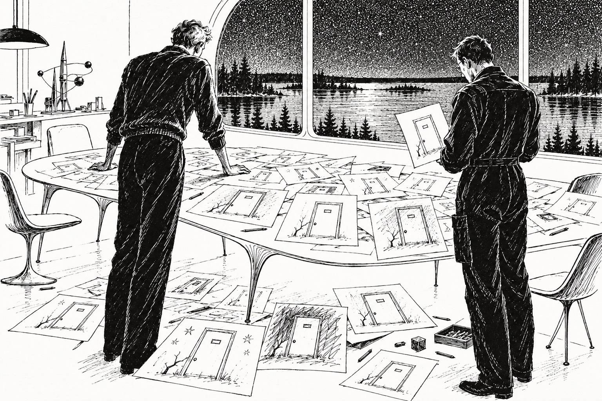

Дверь

Глава первая.
Звонок пришёл в половине третьего ночи, и Ветлугин сразу понял, что разговор будет скверный: Сеня Гуляев никогда не извинялся за поздний час, а тут извинился дважды.
— Ты спишь? — спросил он.
— Сплю, — сказал Ветлугин. — Что у тебя?
— У меня мальчик. Лет одиннадцати. Второй день не ест и рисует одну и ту же дверь. Не какую-то дверь, а вот именно одну. С трещиной в левом нижнем углу.
— Ну и пусть рисует. Это интернат, Сеня, у тебя там все что-нибудь рисуют.
— Это дверь моей комнаты на Тритоне.
Ветлугин помолчал.
— Мало ли на Тритоне дверей, — сказал он наконец. — Их там, я думаю, штампуют на одном заводе. Он мог видеть такую в каком-нибудь фильме.
— С трещиной, — сказал Гуляев и больше ничего не прибавил.
Ветлугин сел на кровати и некоторое время смотрел в темноту. За окном шумело море, ровно и равнодушно, как шумит оно всегда, когда человеку не спится. Он знал Сеню сорок лет без малого, с тех пор как их обоих, восьмилетних и одинаково стриженных, привезли в один интернат, и за эти сорок лет Сеня ни разу не звонил ему ночью.
— Он здоров? — спросил Ветлугин.
— Здоров. Вежлив. Спокоен. Спокойнее меня, если хочешь знать.
— Это нетрудно. Ладно. Буду к обеду.
— Спасибо, — сказал Гуляев, и Ветлугин услышал, как он выдохнул.
⁂
Утром он взял глайдер и пошёл на север, не торопясь, на средней высоте, потому что торопиться было, в сущности, некуда: мальчик не ел второй день, а не третий, и Сеня был при нём. Под глайдером плыли леса, уже облетевшие, серо-рыжие, с чёрными зеркалами озёр. Кое-где сквозь них тянулись старые дороги, заросшие по обочинам березняком. Их давно никто не чинил, потому что по ним давно никто не ездил, и они понемногу превращались из дорог в просеки, а из просек в лес. Ветлугин всегда смотрел на них с непонятной ему самому нежностью.
Он думал о Сене. Думать о мальчике было пока рано: он ничего о мальчике не знал, а придумывать не любил. Сеню же он знал так, как знают людей, с которыми вместе учились плавать, врать Учителю и врать неудачно. Сеня врать не умел вовсе. Когда он пытался, у него краснели уши, сначала левое, потом правое, и весь класс смотрел на эти уши с жадным интересом, а Учитель Ранцев, которого они тогда считали ужасно старым, говорил: «Гуляев, твои уши тебя опять предали, садись». Потом Сеня ушёл в планетологи, потом во внеземелье, несколько лет просидел на станции на Тритоне, а потом вдруг вернулся и, никому ничего толком не объяснив, пошёл в Учителя. Ветлугин тогда спросил его, почему. Сеня ответил, что на Тритоне очень тихо и что ему захотелось шума. Уши у него при этом не покраснели, и Ветлугин счёл ответ правдой. Теперь он в этом засомневался.
Интернат стоял на берегу длинного узкого озера, среди сосен: несколько низких светлых корпусов, оранжерея, спортивное поле, причал с перевёрнутыми лодками. Над полем, жужжа, ходил кибер-садовник и сгребал хвою в аккуратные кучи, а за ним с серьёзным видом шли двое малышей и эти кучи разоряли. Кибер терпеливо возвращался. Это, по-видимому, была игра, и правила её знали все трое.
Гуляев встретил его на посадочной площадке. Он был всё такой же длинный и худой, только сутулился сильнее и поседел окончательно, и вид у него был подчёркнуто бодрый, какой бывает у людей, которые не спали ночь и не хотят, чтобы это заметили.
— Ты похудел, — сказал Ветлугин.
— Ты тоже не поправился. Пойдём. Обедать будешь?
— А он?
— А он нет, — сказал Гуляев. — Пойдём сначала к нему.
Они шли по длинному стеклянному переходу. Слева было озеро, справа классы, и в классах сидели, стояли, лежали на полу и даже, кажется, висели под потолком дети всех возрастов, занятые чем-то своим и очень громким.
— Расскажи про него, — сказал Ветлугин.
— Даня. Даниил. У меня третий год. Учится ровно, без блеска. Рисует хорошо, лучше всех в группе. Друзья есть, врагов нет. Мать планетолог, сейчас во внеземелье, пишет ему раз в месяц, видеописьмами. Отца он не помнит.
— Мать знает?
— Нет. Я ей пока не писал. Что я ей напишу? «Ваш сын рисует дверь»?
— Когда он начал?
— В понедельник. Сначала я и внимания не обратил. Потом увидел трещину. Потом увидел, что он не ест. Он не капризничает, понимаешь, не протестует. Он садится за стол, смотрит в тарелку и говорит: «Спасибо, я не хочу». И идёт рисовать.
— Что ещё?
— Ещё? — Гуляев остановился у двери мастерской. — Ещё он меня жалеет. Он смотрит на меня так, будто это я не ем второй день.
⁂
В мастерской пахло красками, клеем и свежей стружкой. Даня сидел у окна за большим дуговым столом, один, хотя мастерская была рассчитана на целую группу, и рисовал. Он поднял голову, увидел Гуляева, увидел незнакомого человека и встал.
— Здравствуйте, — сказал он.
— Здравствуй, — сказал Ветлугин. — Меня зовут Ветлугин, я старый товарищ Учителя Гуляева. Можно я посмотрю?
— Можно, — сказал Даня и подвинулся.
Это был обыкновенный мальчик, тонкий, светловолосый, с обкусанными ногтями и с синим пятном краски на скуле. Ветлугин посмотрел на него внимательно, как смотрел на всех, кто когда-либо садился перед ним в кресло ментоскопа, и ничего особенного не увидел: ни лихорадочного блеска, ни заторможенности, ни той стеклянной вежливости, за которой обычно прячется большой страх. Мальчик был голоден, это было видно по губам и по тому, как он держал кисточку, но и только.
Рисунки лежали на столе стопкой, ещё несколько было приколото кнопками к стене. Ветлугин взял стопку и стал перебирать. Их было больше двадцати. Карандаш, тушь, акварель, один даже углём. На всех была дверь. Обыкновенная дверь жилого отсека, серая, гладкая, с утопленной ручкой, какие ставили на внеземных станциях лет двадцать назад. Справа на уровне глаз маленькая табличка: «Б-14». В левом нижнем углу трещина, тонкая, ветвистая, как молния, нарисованная ребёнком, но не ребёнком придуманная. На одних рисунках дверь была видна вся, на других только её нижняя часть, с трещиной, крупно, будто рисовавший сидел на полу. На одном рисунке дверь была чуть приоткрыта, и в щели было темно.
— Красиво, — сказал Ветлугин. — Это ты сам придумал?
— Нет, — сказал Даня. — Она приходит.
— Как приходит?
Даня подумал.
— Ну, как сон. Только днём тоже. Я закрываю глаза, а она там.
— И давно?
— С воскресенья. Нет, с понедельника. В воскресенье она была, но я не понял.
— А что за ней, ты знаешь?
— Там кто-то есть, — сказал Даня. — Ему плохо.
Он сказал это тем же тоном, каким сказал бы, что краска засохла, и Ветлугин почувствовал, как у него за спиной Гуляев переступил с ноги на ногу.
— Поэтому ты не ешь? — спросил Ветлугин.
— Мне стыдно есть, когда ему плохо, — объяснил Даня. — Это же нечестно.
— А он ест, как ты думаешь?
— Не знаю. Наверное, нет. Ему не до этого.
Ветлугин положил рисунки на стол, выровнял стопку.
— Слушай, — сказал он. — Я врач. Не такой врач, который лечит горло, а такой, который разбирается, что у людей в голове. Ты не против, если я как-нибудь приду ещё и мы поговорим?
— Приходите, — сказал Даня. — Только я не болею. Я честно не болею.
— Я тебе верю, — сказал Ветлугин и, к своему удивлению, понял, что действительно верит.
⁂
Вечером они сидели в комнате Гуляева, маленькой и захламлённой, где всё было завалено детскими поделками, книгами и деталями от каких-то разобранных приборов. Ветлугин пообедал, и поужинал, и выпил три чашки чаю, и после каждой еды ему было неловко. Гуляев не ел ничего, кроме яблока, и то не доел.
— Ну? — сказал Гуляев.
— Что «ну»? Здоровый мальчик. Не истерик, не фантазёр. Я бы сказал, что у него очень устойчивая психика, если бы не эта дверь.
— Значит, ты видишь, что это не фантазия.
— Я вижу, что он в неё верит. Это не одно и то же. Сеня, давай рассуждать спокойно. Двери такого типа стояли на всех станциях внешнего пояса. Он мог видеть их где угодно: в учебном фильме, в хронике, в письмах матери, наконец. Трещины бывают. Буквы и цифры на табличках тоже бывают, их не так уж много вариантов. Он увидел, запомнил, забыл, а потом вспомнил. Дети иногда вспоминают очень странные вещи, и очень ярко.
— Да, — сказал Гуляев. — Наверное.
Он встал и подошёл к окну. За окном было черно, только на причале горел одинокий фонарь, и в его свете медленно падали первые снежинки, редкие и крупные. Ветлугин смотрел Сене в спину и ждал. Он знал эту спину.
— Номер тоже правильный, — сказал Гуляев, не оборачиваясь.
Глава вторая.
Утром Ветлугин сел за терминал информатория в учительской и первым делом сделал то, что сделал бы на его месте любой здравомыслящий человек: стал искать скучное объяснение.
Он давно заметил, что необъяснимое почти всегда оказывается просто необъяснённым, а необъяснённое обычно лежит на виду, только никому не приходит в голову туда посмотреть. Информаторий помнил всё. Он помнил, кто, когда и в каком отсеке жил на станции «Тритон-Северная», когда там меняли фильтры и кто заказывал в столовой третью порцию компота. Нужно было только правильно спросить.
Он спросил. Через минуту он откинулся на спинку кресла и засмеялся, коротко и с облегчением.
— Сеня, — позвал он. — Иди сюда.
Гуляев подошёл, держа в руке чашку с остывшим чаем, и наклонился к экрану.
— Вот, — сказал Ветлугин. — Жилой отсек «Б», комната четырнадцать. Гуляев Семён, планетолог, столько-то лет. Потом полгода пусто. Потом — смотри. Нильсен Вера, планетолог, два года с небольшим. Нильсен, Сеня. Какая у Дани фамилия?
Гуляев молчал. Потом поставил чашку на край стола, так осторожно, будто она была из тонкого льда.
— Нильсен, — сказал он. — Я не знал. Она никогда не говорила, где работала. То есть говорила «на внешних станциях», но мало ли их.
— Вот и всё. Его мать жила в твоей комнате. Она писала ему оттуда, и в письмах была эта дверь. Мальчик смотрел на неё каждый месяц два года подряд, ещё совсем маленький. Потом забыл. Теперь вспомнил. Что-то его, видимо, тронуло, может быть, он соскучился по матери, может быть, просто перерос что-то и что-то в нём сдвинулось. Дети так устроены. Через неделю он это нарисует в последний раз и вернётся к своим акварелям, а мы с тобой будем сидеть и краснеть, вспоминая, как ты звонил мне в половине третьего ночи.
— А трещина? — спросил Гуляев.
— А трещина была на двери, — терпеливо сказал Ветлугин. — Ты что, думаешь, её за полгода кто-то заделал? На станции, где всем некогда? Её, я думаю, и сейчас не заделали.
Гуляев ничего не ответил. Он взял чашку, посмотрел в неё и снова поставил.
— Письма у него, — сказал он. — Все письма у него в личном архиве.
— Ну так спросим.
⁂
Даня разрешил сразу. Он даже как будто обрадовался, что взрослых интересуют мамины письма, и сам показал, как их найти, хотя Гуляев знал это не хуже его.
— Они хорошие, — сказал он. — Только старые там скучные, я тогда был маленький, и мама объясняет всё как маленькому.
— Мы потерпим, — сказал Ветлугин.
Даня ушёл в мастерскую, и они остались вдвоём перед экраном. Писем с Тритона было двадцать три. Ветлугин открыл первое.
На экране появилась женщина лет тридцати, круглолицая, коротко стриженная, с тем же, что у Дани, упрямым подбородком. Она сидела на откидной койке, поджав ноги, и смеялась.
— Данька, привет, — сказала она. — Это мама. Видишь, где я теперь живу? Это моя комната. Она маленькая, но зато у неё есть окно, а в окне знаешь что? Нептун. Он синий-синий, как твоя кружка с китом. Я тебе потом покажу...
За её плечом, чуть сбоку, была дверь. Серая, гладкая, с утопленной ручкой. Ветлугин остановил запись и увеличил левый нижний угол.
Трещины не было.
Он открыл второе письмо, потом пятое, потом последнее. Вера Нильсен рассказывала сыну про кольца Нептуна, про повара станции, который пёк пироги с морской капустой, про то, как они всей сменой ловили сбежавшего кибера, про гейзеры, про холод, про то, что скоро вернётся. Она была весёлая женщина и, по-видимому, хорошая мать. Дверь была почти в каждом письме. Трещины не было нигде. Дверь была гладкая, ровная, недавно покрашенная, какой ей и полагалось быть.
— Заделали, — сказал Гуляев. — Когда я уезжал, она была. Значит, за эти полгода заделали.
Ветлугин не ответил. Он снова увеличил изображение, на этот раз справа, на уровне глаз. Там была табличка. Он долго смотрел на неё, потом открыл в соседнем окне журнал станции и долго листал.
— Сеня, — сказал он наконец. — Что написано на табличке у Дани?
— «Б-14».
— А здесь написано «С-2-14». Станцию перенумеровали после реконструкции. Через четыре месяца после твоего отъезда и за два месяца до её приезда. Она никогда не видела таблички «Б-14». Мальчик не мог видеть её в письмах. И трещины он в письмах видеть не мог.
Гуляев сел на подоконник, прямо на чьи-то разложенные для просушки гербарии, и не заметил этого.
— Так, — сказал он.
— Ничего ещё не «так», — сказал Ветлугин, но без прежней уверенности. — Могли быть фотографии. Могли быть твои фотографии, в конце концов. Ты снимал свою комнату?
— Нет. Зачем мне было её снимать? Я в ней жил.
— Может быть, кто-то другой снимал. Кто-нибудь заходил к тебе в гости и снимал. Где-нибудь в архиве станции лежит снимок, где видна твоя дверь, а мальчик на него наткнулся.
— Где он мог наткнуться? В архиве станции на Тритоне? Ему одиннадцать лет, Ваня.
— Не знаю, — сказал Ветлугин. — Не знаю, где. Но где-то же он это взял.
Он сам слышал, что говорит это так, как говорят дети, когда им нечего больше сказать.
⁂
В столовой было шумно. Две старшие группы что-то праздновали, кажется, удачный запуск метеозонда, и праздновали громко, с песнями и с перебрасыванием булками через столы. Дежурный Учитель, молодой бородатый парень в свитере с оленями, делал вид, что ничего не замечает, и сам при этом ловил булки с большим азартом.
Даня сидел у окна, за столом своей группы, перед полной тарелкой. Он не ел. Он рисовал вилкой на салфетке, медленно, аккуратно, и Ветлугину не нужно было подходить, чтобы понять, что именно. Соседи по столу, двое мальчиков и девочка, не смеялись над ним и не уговаривали. Они просто сидели рядом, ели и время от времени что-то ему говорили, а он кивал. Девочка подвинула к нему свой компот. Даня улыбнулся ей и покачал головой.
— Третий день, — сказал Ветлугин вполголоса.
— Я знаю.
— Сеня, я врач. Ещё день-два, и мне придётся сделать то, что положено, независимо от того, есть за его дверью кто-нибудь или нет. Он ребёнок. Детям нельзя не есть.
— Я знаю, — повторил Гуляев.
Ветлугин смотрел на Даню и на его соседей. Его поразило, как спокойно они к этому относились. Не равнодушно, нет, наоборот, в них чувствовалась какая-то серьёзная, совсем не детская деликатность. Будто они понимали, что их товарищ занят важным делом, и не хотели мешать.
— Странные они у тебя, — сказал он.
— Обыкновенные.
— Нет. Мы такими не были. Мы бы его уже затормошили, обиделись бы на него, отняли бы салфетку. А эти сидят и ждут. Знаешь, дети в последние годы вообще какие-то другие. Я давно замечаю. У меня в кресле тоже.
— Хорошие, — сказал Гуляев.
— Хорошие, — согласился Ветлугин. — Я и говорю: другие.
Они помолчали. Через стол пролетела булка, Гуляев машинально поймал её и положил на поднос.
— Сеня, — сказал Ветлугин. — Откуда трещина?
Гуляев долго смотрел на булку. Потом поднял голову, и Ветлугин увидел, что уши у него не красные. Они были белые.
— Это я, — сказал Гуляев.
Глава третья.
К ночи снег пошёл всерьёз. Они сидели на веранде учительского корпуса, закутавшись в пледы, и смотрели, как он ложится на перевёрнутые лодки, на причал, на чёрную воду, где таял, не долетая. Дети спали. Где-то за углом урчал ночной кибер-уборщик, сгребая с дорожек первый снег, и это урчание было единственным звуком, кроме их голосов.
Гуляев говорил мало и с большими паузами. Ветлугин его не торопил.
— Там была одна ночь, — сказал Гуляев. — Под конец. Я тебе не скажу, что там было. Не потому, что не доверяю. Просто это моё, понимаешь? Не тайна даже. Просто моё.
— Понимаю.
— Мне было очень плохо. Так плохо, как никогда до этого и никогда после. Я сидел на полу у двери и ждал утра. А потом встал и ударил. Вот этим. — Он показал правую руку, длинную, с крупными костяшками. — Дверь там из какого-то пластика, его не всякий молоток возьмёт, а я взял. Руку потом лечили, а дверь, видишь, так и осталась. Утром я подал рапорт, через неделю улетел. Дверь заделывали уже без меня.
— И никто не знает.
— Никто. Медикам я сказал, что упал. Медики, по-моему, не поверили, но спрашивать не стали. Они хорошие люди, медики. — Он усмехнулся. — Ни Совет, ни Ранцев, пока был жив, ни ты. И уж точно не женщина, которая полгода спустя туда въехала и снимала для сына, какой у неё синий Нептун. Никто, Ваня. А он рисует.
Ветлугин долго молчал. Он думал о том, что на Пандоре, где он двадцать лет назад начинал врачом, был один егерь, который однажды ночью сломал о стену кабины табурет, а наутро вёл себя так, будто ничего не случилось, и все вели себя так же, и это было правильно. В их мире так было принято: не спрашивать человека о том, о чём он сам не говорит. Это было одно из самых простых правил и одно из самых хороших. Ветлугин никогда в нём не сомневался.
— Ладно, — сказал он. — Давай тогда как врач. У меня в глайдере походный ментоскоп. Ты понимаешь, о чём я.
— Понимаю.
— Получасовая запись, без всякого вреда, он даже не заскучает. Я посмотрю ментограмму и, вероятно, пойму, откуда у него эта дверь. Может быть, там окажется какое-нибудь совершенно дурацкое объяснение, о котором мы с тобой не подумали. Скорее всего, так и будет. Согласие за него даёшь ты. Мать далеко, ты его Учитель.
— А если не окажется? — спросил Гуляев.
— Что не окажется?
— Дурацкого объяснения. Ты посмотришь, что у него в голове, и увидишь там мою ночь. Его глазами. Или не увидишь, но будешь искать. Ты же не остановишься, Ваня, я тебя знаю. Ты будешь искать, пока не найдёшь.
— Не исключено.
— Вот. — Гуляев поплотнее завернулся в плед. — Он мне третий год рассказывает всё, что хочет рассказать, а чего не хочет, не рассказывает, и я не спрашиваю. Это не потому, что мне неинтересно. Мне очень интересно. Это потому, что так правильно. А теперь я должен разрешить тебе заглянуть к нему туда, куда он сам никого не звал. Чтобы узнать, как он узнал то, что я никому не рассказывал. Хорошая арифметика, правда?
Ветлугин не ответил. Снег шёл всё гуще.
— И ещё, — сказал он наконец. — Ты это тоже знаешь. По-хорошему, мы должны сообщить.
— Куда?
— Не делай вид. В Комиссию. В КОМКОН. Ребёнок знает то, чего знать не может. Это необъяснённое явление, Сеня. Для таких вещей правила писали не дураки.
— Не дураки, — согласился Гуляев. — И люди там хорошие. Я знаю, я с ними работал, когда был на Тритоне. Они его не обидят. Они будут очень бережны. Они его будут изучать бережно, вежливо, с его согласия, с согласия матери, с моего согласия. Всю жизнь, Ваня. Он вырастет, станет кем-нибудь, архитектором или садовником, а к нему раз в год будет приезжать вежливый человек и спрашивать, как дела и не снится ли ему что-нибудь. И он будет знать, почему этот человек приезжает.
— Ты преувеличиваешь.
— Может быть. А может быть, нет. Ты уверен?
Ветлугин не был уверен. Он вообще в этот вечер ни в чём не был уверен, и это было для него непривычно и неприятно. Он был человеком правил. Не потому, что любил правила, а потому, что знал, сколько хороших людей их придумывало, и сколько раз они себя оправдали, и как дорого обходилось, когда кто-нибудь самый умный решал, что этот случай особенный. Каждый случай кажется особенным тому, кто внутри.
— А если он не один такой? — спросил он тихо. — Ты об этом думал? Если где-нибудь в другом интернате сидит ещё один и рисует чужую дверь? И ещё один? И всё это что-то значит, а мы с тобой сидим тут на веранде и решаем, что не будем никому говорить, потому что нам жалко мальчика?
— Думал, — сказал Гуляев. — Всю прошлую ночь думал. Если их много, про них узнают и без нас. А этого я не отдам. Не потому, что жалко. Потому, что я его Учитель.
Он сказал это без всякого нажима, почти буднично, и Ветлугин понял, что спорить бесполезно. Не потому, что Сеня упрям, а потому, что он уже всё решил, и решил не сейчас, а, может быть, ещё тогда, когда звонил ему в половине третьего ночи.
— Что же ты будешь делать? — спросил он.
— Расскажу ему.
— Что расскажешь?
— Про ту ночь. Про дверь. Правду.
— Ты же никому не говорил.
— Никому, — сказал Гуляев. — Вот ему и скажу. Ему, кажется, нужно. Он там один сидит с этим, понимаешь? У двери. Кто-то же должен ему сказать, что тот, за дверью, давно ушёл.
Ветлугин смотрел на снег. Он думал о ментоскопе в багажнике глайдера, о правилах, о том, что завтра утром мальчик опять не будет есть, о том, сколько всего он сейчас не понимает и, видимо, так и не поймёт.
— Хорошо, — сказал он. — Хорошо, Сеня. Делай.
Он не был уверен, что говорит правильно. Но он был уверен, что ничего другого сказать не может.
Глава четвёртая.
Гуляев ждал вечера. Ветлугин не спрашивал почему, но понимал: такие разговоры не ведут с утра, на свету, между уроками. Весь день Даня рисовал, Гуляев вёл занятия, а Ветлугин бродил по интернату, помогал малышам чинить лодочный мотор и делал вид, что он здесь просто в гостях. Обедать Даня опять не стал. Ветлугин посмотрел на его губы, на тени под глазами и сказал себе, что подождёт до утра, и ни минутой дольше.
После ужина Гуляев зашёл в мастерскую и закрыл за собой дверь.
Стена мастерской, выходившая в коридор, была стеклянная, как почти все стены в этом интернате, и Ветлугин, проходя мимо, увидел их обоих. Даня сидел на краю дугового стола, болтая ногами. Гуляев сидел перед ним на детском стульчике, слишком низком для него, так что колени торчали почти до подбородка, и говорил. Говорил он медленно, иногда останавливаясь, иногда разводя руками, и один раз, кажется, показал свою правую руку. Слов не было слышно. Стекло было хорошее, звуконепроницаемое, его ставили, чтобы малыши в мастерской не мешали старшим в коридоре.
Ветлугин стоял и смотрел, и ему было стыдно смотреть, и он не мог уйти. Даня слушал, не перебивая. Потом слез со стола, подошёл к Гуляеву и положил руку ему на рукав, как кладут взрослые, когда хотят сказать: ну, ну, хватит. Гуляев опустил голову.
Ветлугин отвернулся и пошёл на причал.
Снег уже не шёл. Озеро стояло чёрное и неподвижное, а над ним, совсем низко, висели звёзды, крупные, северные, каких никогда не бывает над морем. Ветлугин стоял у перевёрнутых лодок и думал, что сейчас за стеклянной стеной один человек отдаёт другому то, чего никогда никому не отдавал, и что этот другой одиннадцати лет от роду, и что, может быть, это самое правильное, что Сеня сделал за всю свою жизнь, а может быть, самое неправильное. И что он, Ветлугин, этого так и не узнает, потому что не услышал ни слова и спрашивать не станет.
Когда он вернулся, в мастерской было темно.
⁂
Утром Даня ел кашу.
Он ел её медленно и очень серьёзно, как работу, которую надо сделать хорошо, и вся группа за столом делала вид, что ничего особенного не происходит, и сияла. Девочка опять подвинула ему свой компот, и на этот раз он взял. Дежурный Учитель в свитере с оленями поймал взгляд Гуляева, поднял брови и показал большой палец. Гуляев кивнул. Вид у него был человека, который проспал двенадцать часов, хотя Ветлугин был уверен, что он не спал совсем.
После завтрака Ветлугин зашёл в мастерскую попрощаться. Даня был там, раскладывал по коробкам высохшие кисти. На дуговом столе, отдельно от всего, лежал рисунок.
Это была та же дверь. Серая, гладкая, с утопленной ручкой, с табличкой «Б-14». Только трещины в левом нижнем углу больше не было. Дверь была закрыта плотно, без всякой щёлочки, и нарисована была не тушью и не углём, а светлой акварелью, почти прозрачной.
— Это последняя? — спросил Ветлугин.
— Да, — сказал Даня. — Больше не надо.
— А тот, кто был за ней?
Даня поднял на него глаза, спокойные, ясные, совсем не голодные теперь.
— Он вышел, — сказал Даня.
Ветлугин хотел спросить, откуда он знает. Вопрос был у него на языке, простой и законный, вопрос врача. Он не спросил. Он кивнул, пожал мальчику руку, как взрослому, и Даня пожал её в ответ, крепко и серьёзно.
Уже у выхода он обернулся. На соседнем столе, у окна, лежал чистый лист, придавленный банкой с водой. На листе было начато что-то новое: несколько линий карандашом, лёгких, едва заметных. Они ни во что не складывались. Это могло быть что угодно, начало пейзажа, или угол дома, или просто проба карандаша. Ветлугин смотрел на них не дольше секунды, и ему вдруг стало не по себе, так, как бывает, когда в пустой комнате кажется, что тебя окликнули по имени. Он не понял, почему. Он не подошёл и не спросил. Он вышел и тихо прикрыл за собой дверь.
⁂
Гуляев проводил его до глайдера. Ночью подморозило, и площадка блестела, как каток.
— Привези в следующий раз нормального чаю, — сказал Гуляев. — У нас кончился. Тот, что в столовой, пить нельзя.
— Привезу. Матери напишешь?
— Напишу. Напишу, что он хорошо рисует и что очень по ней скучает. Это правда.
— Это правда, — согласился Ветлугин.
Они постояли. Говорить было больше не о чем, и это было хорошо.
— Спасибо, что прилетел, Ваня.
— Не за что. Звони, если что. Только не в половине третьего.
— Не обещаю, — сказал Гуляев, и уши у него впервые за три дня порозовели. От холода, наверное.
⁂
Глайдер шёл на юг, не торопясь, на средней высоте. Ветлугин сидел, положив руки на колени, и смотрел вниз.
Он думал о том, что они поступили правильно. Что мальчик ест, что Сеня спит, что никто никуда не написал и никто ни к кому не приедет раз в год с вежливыми вопросами. Что есть вещи, которые принадлежат только человеку, и не надо их у него брать, даже если очень хочется знать. Он думал так довольно долго, и всё в этих мыслях было верно.
Потом он подумал, что когда-нибудь они об этом пожалеют. Он не знал, когда и почему. Он просто это знал, так же ясно, как знал, что внизу лес.
Под глайдером тянулась старая дорога. Снег лёг на неё ровно, так же, как на весь остальной лес, и было уже почти не разобрать, где кончается дорога и где начинаются деревья.